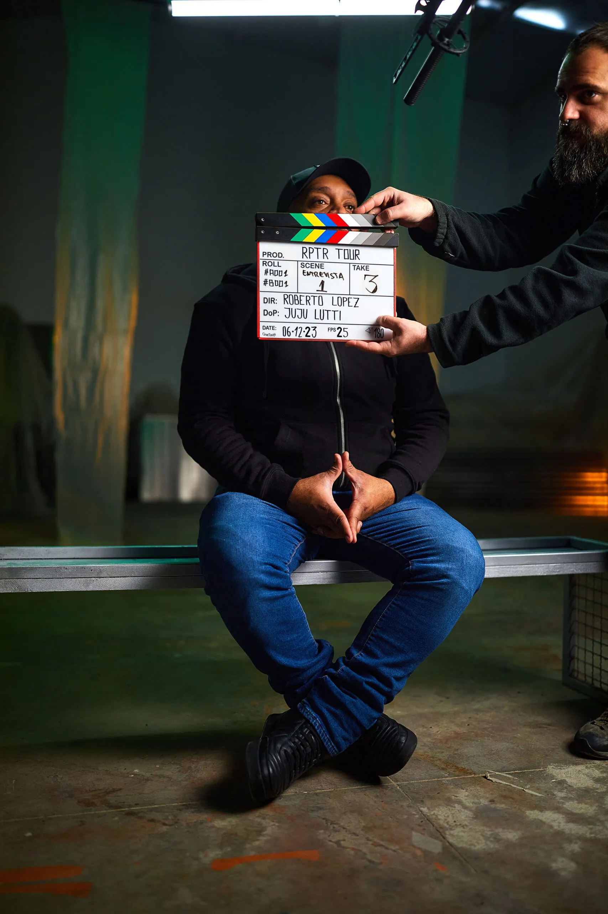
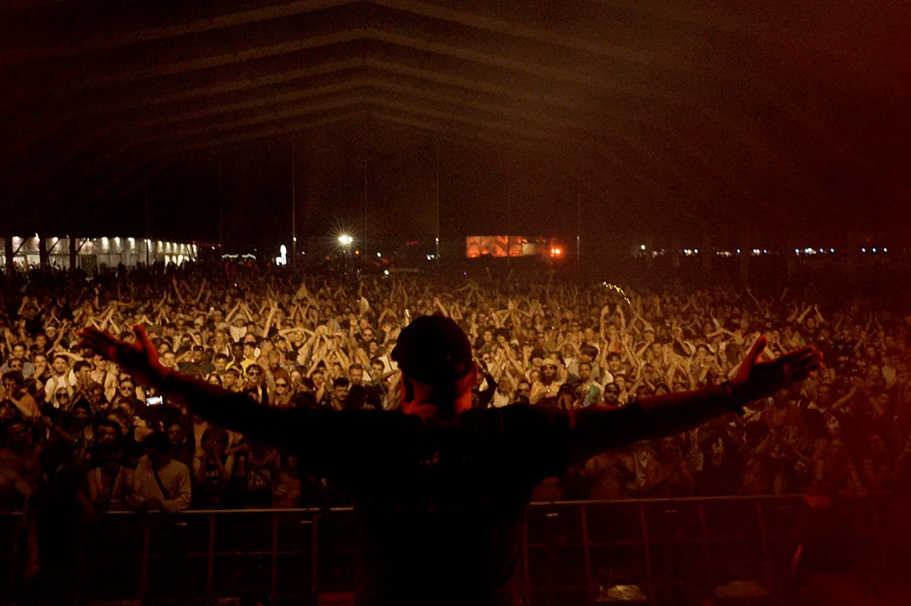

THIS IS RAPTOR HOUSE (2025)
Objective: Support the project's participation at In-Edit Barcelona and achieve coverage in key traditional and digital media.
In parallel: Reinforce Morning Coffee's positioning as a creative production company specialised in entertainment.
A cultural narrative with reach
We approached the documentary as a cultural narrative, connecting its historical relevance with collective memory and the identity of a key scene. We built a discourse that transcended the premiere event and broadened editorial interest.


Planning, launch, follow-up and consolidation
We designed a comprehensive phased strategy to sustain presence in general media (print and digital) and specialist press (electronic music and underground scene). We structured the plan across Madrid and Barcelona with national and international reach.
Results:
- 7 hits in national, local and specialist media in the context of In-Edit Barcelona.
- Geographic coverage across Madrid, Barcelona and national reach.
- Page-and-a-half feature in Diario El Mundo (print), with digital article and video.
- Notable appearances in major general and specialist media including Canal 24 Horas (RTVE), La Razón Cultura, El Plural, ABC Cultura, The Objective, Wololo Sound, among others.
- 8-page interview in Mix Mag Spain, Spain's leading electronic music magazine.
- Comprehensive actions: interviews, segmented press releases, media invitation to the Barcelona premiere and paid media actions in a key music sector outlet.
- 48+ hits across national, local and specialist media.